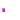

Public interface definitions (shall be included in Modelica Standard Library)
| Name | Description |
|---|---|
| Vector of Boolean inputs | |
| Vector of Integer inputs | |
| Vector of Real inputs | |
| Partial block with a BooleanInput and a BooleanOutput signal | |
| Partial block with a IntegerInput and an IntegerOutput signal | |
| PartialRealSISO | Partial block with a RealInput and an RealOutput signal |
| PartialBooleanMISO | Partial block with a BooleanVectorInput and a BooleanOutput signal |
| Partial block with an IntegerVectorInput and an IntegerOutput signal | |
| PartialRealMISO | Partial block with a RealVectorInput and a RealOutput signal |
|  PartialTriggeredSet | Partial block to evaluate expression that is associated with the first input trigger signal (optionally with guard) |
| Record to define a "active, integer" pair, to associate an integer with an active flag |
 Modelica_StateGraph2.Blocks.Interfaces.BooleanVectorInput
Modelica_StateGraph2.Blocks.Interfaces.BooleanVectorInputVector of Boolean inputs
Connector with one input signal of type Boolean.
Extends from Boolean.
 Modelica_StateGraph2.Blocks.Interfaces.IntegerVectorInput
Modelica_StateGraph2.Blocks.Interfaces.IntegerVectorInputVector of Integer inputs
Connector with one input signal of type Boolean.
Extends from Integer.
 Modelica_StateGraph2.Blocks.Interfaces.RealVectorInput
Modelica_StateGraph2.Blocks.Interfaces.RealVectorInputVector of Real inputs
Connector with one input signal of type Boolean.
Extends from Real.
Partial block with a BooleanInput and a BooleanOutput signal
| Name | Description |
|---|---|
| y | |
| u |
Partial block with a IntegerInput and an IntegerOutput signal
| Name | Description |
|---|---|
| y | |
| u |
Partial block with a RealInput and an RealOutput signal
| Name | Description |
|---|---|
| y | |
| u |
Partial block with a BooleanVectorInput and a BooleanOutput signal
| Name | Description |
|---|---|
| u[nu] | |
| y |
 Modelica_StateGraph2.Blocks.Interfaces.PartialIntegerMISO
Modelica_StateGraph2.Blocks.Interfaces.PartialIntegerMISOPartial block with an IntegerVectorInput and an IntegerOutput signal
| Name | Description |
|---|---|
| u[nu] | |
| y |
Partial block with a RealVectorInput and a RealOutput signal
| Name | Description |
|---|---|
| Advanced | |
| precision | Number of significant digits to be shown in dynamic diagram layer for y |
| Name | Description |
|---|---|
| u[nu] | |
| y |
Partial block to evaluate expression that is associated with the first input trigger signal (optionally with guard)
| Name | Description |
|---|---|
| Select exactly one check box | |
| rising | =true, if rising input triggers evaluation |
| changing | =true, if changing input triggers evaluation |
| falling | =true, if falling input triggers evaluation |
| active | =true, if active input at sample times triggers evaluation |
| Other options | |
| use_guard | = true, if guard enabled |
| guard | y not changing, if guard=false (time varying) |
| samplePeriod | Sample period if active=true (only temporarily) [s] |
 Modelica_StateGraph2.Blocks.Interfaces.ActiveSetIntegerRecord
Modelica_StateGraph2.Blocks.Interfaces.ActiveSetIntegerRecordRecord to define a "active, integer" pair, to associate an integer with an active flag
Extends from Modelica.Icons.Record (Icon for records).
| Name | Description |
|---|---|
| active | Active flag |
| expr | y = if active then expr else y_default (time varying) |